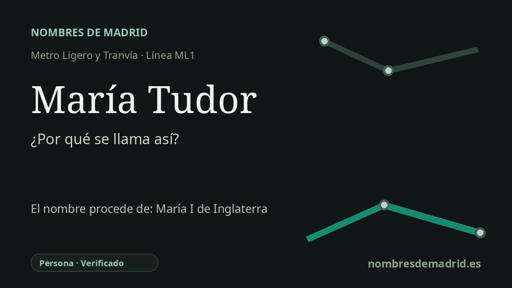

Publicado el · Investigación de Nombres de Madrid · Cómo verificamos cada origen · 10 fuentes consultadas
Respuesta rápida
La estación de María Tudor toma su nombre de la calle de María Tudor, en Sanchinarro. La calle alude a María I de Inglaterra, la reina Tudor que se casó en 1554 con el futuro Felipe II de España.
La historia del nombre
El nombre de la estación es local antes que regio: la estación de María Tudor está en la calle de María Tudor, y el Consorcio Regional de Transportes sitúa su acceso en la calle de María Tudor, 15. En la geografía del metro ligero madrileño, pertenece al ramal de ML1 hacia Sanchinarro y Las Tablas, abierto para dar servicio a los nuevos desarrollos residenciales del norte en la década de 2000.
La mujer que hay detrás del nombre de la calle es María I de Inglaterra, más conocida en español como María Tudor. Nació en 1516, hija de Enrique VIII y de Catalina de Aragón, lo que le daba un vínculo familiar directo con España: Catalina era hija de Isabel I de Castilla y Fernando II de Aragón. La historia oficial de la monarquía británica identifica a María como la primera reina reinante de Inglaterra, es decir, una reina que gobernaba por derecho propio y no por matrimonio con un rey.
Ese vínculo español se volvió político en 1554, cuando María se casó con el príncipe Felipe, futuro Felipe II de España. La ficha del Museo del Prado sobre el retrato de María Tudor pintado por Antonio Moro en 1554 la sitúa claramente en ese contexto Tudor-Habsburgo: reina de Inglaterra, hija de Enrique VIII y Catalina de Aragón, y segunda esposa de Felipe II. Para España, el matrimonio prometía una alianza con Inglaterra; para muchos súbditos ingleses, despertaba temores de influencia extranjera.
Los acuerdos legales son importantes. Felipe recibió tratamiento de rey durante el matrimonio y la pareja podía aparecer conjuntamente, pero el arreglo inglés protegía las leyes, los cargos y la lengua de gobierno del reino, y no otorgaba a Felipe un derecho personal duradero a la Corona inglesa si María moría sin heredero. Esa es una formulación más precisa que decir simplemente que se le impidió ser coronado: lo esencial es que su autoridad era condicional, matrimonial y políticamente limitada.
Hay un matiz local en este caso. El callejero y los equipamientos municipales sitúan la calle de María Tudor en Hortaleza, en el entorno de Valdefuentes y Sanchinarro, no en Fuencarral-El Pardo. El nombre de la estación es seguro, y no consta un nombre anterior: parece haber sido inaugurada como María Tudor junto con la ML1 el 24 de mayo de 2007.